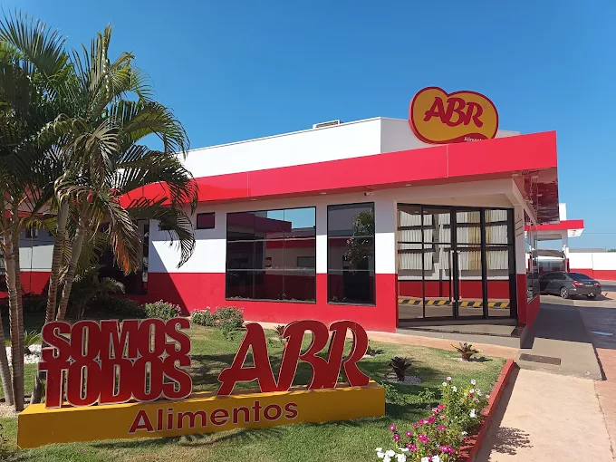
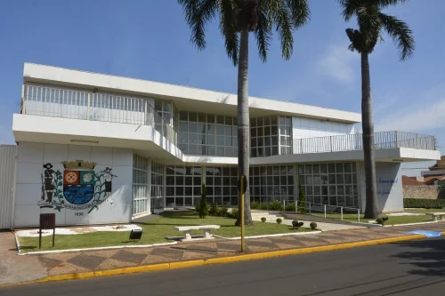

ABR Alimentos - Bariri, SP
Através do Centro de Promoção Social de Bariri, ingressei no mercado de trabalho pela primeira vez em 2022 após realizar o curso I.M.T (Ingressando no Mercado de Trabalho).
Tendo início em Dezembro de 2022, comecei na empresa preparando embalagens para alimentos, como diversos tipos de caixas de papelão. Após alguns meses de experiência, comecei a auxiliar na expedição dos produtos, emitindo etiquetas com informações como pesagem, nome, data, etc. Todo este processo era feito de forma digital com auxílio de um software preparado especificamente para a empresa.

Prefeitura Municipal de Bariri
Graças ao curso Gestão da Tecnologia da Informação na Fatec Jahu, consegui uma oportunidade para ingressar no setor de T.i. da Prefeitura Municipal como estagiário, tendo contato com montagem/manutenção de diversas máquinas espalhadas por todo município.
Além de ganhar muita experiência prática com hardware, acabei tendo contato com outras funções, como uso e manutenção de servidores, atualização de sistemas utilizados pelos Servidores Públicos, dentre outros. Agradeço ao William Carlim, atual chefe do setor de T.i. da Prefeitura Municipal, e formado em Gestão da Tecnologia da Informação, também cursado na Faculdade de Tecnologia de Jahu, (FATEC), pela oportunidade e experiência.
Como dito anteriormente, obtive muita experiência prática no estágio da Prefeitura Municipal.
Realizei diversos reparos e manutenções preventivas nos computadores utilizados pelos Servidores Públicos espalhados pela cidade. Na maioria dos casos, meu serviço consistia em apenas realizar um backup dos arquivos do usuário e reinstalar o sistema operacional. Além disso, teve outras situações onde foi necessário realizar a substituição de algum componente da máquina.